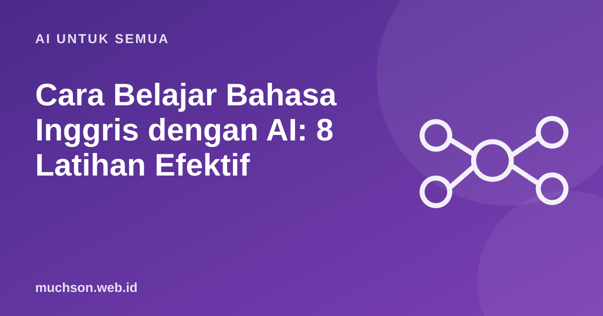

Beranda › Artikel › AI untuk Semua
AI untuk SemuaCara Belajar Bahasa Inggris dengan AI: 8 Latihan Efektif
Banyak orang Indonesia bisa membaca bahasa Inggris, tetapi kaku saat berbicara dan menulis karena jarang punya teman latihan. Chatbot AI bisa menjadi partner latihan yang sabar, tersedia kapan saja, dan tidak menghakimi. Kuncinya adalah memakai AI untuk berlatih secara aktif, bukan untuk menerjemahkan semuanya.

Tentukan level Anda dulu
Kerangka CEFR (Common European Framework of Reference for Languages) dari Dewan Eropa membagi kemampuan bahasa menjadi enam level, dari A1 (pemula) sampai C2 (mahir). Menyebut level di prompt membuat AI menyesuaikan kosakata dan kecepatan.
| Level | Gambaran singkat |
|---|---|
| A1-A2 | Kalimat sederhana tentang diri sendiri dan kebutuhan sehari-hari |
| B1 | Bisa bercerita tentang pengalaman dan menangani situasi umum saat bepergian |
| B2 | Bisa berdiskusi tentang topik umum dan pekerjaan dengan cukup lancar |
| C1-C2 | Lancar dan fleksibel untuk akademik dan profesional |
8 latihan dengan AI
1. Percakapan dengan peran
Let's practice English. My level is B1.
You are a hotel receptionist and I am a guest checking in.
Keep your replies short (1-2 sentences) and ask me questions.
After every 3 of my messages, list my grammar mistakes with corrections in a short table.2. Koreksi tulisan yang mengajar
Jangan minta AI "perbaiki tulisan saya" saja, karena Anda tidak belajar apa-apa. Minta penjelasan kesalahannya:
Here is my paragraph. Do not rewrite it fully.
1) Underline each mistake and explain the rule briefly in simple English.
2) Then give me a corrected version.
3) Give me 3 similar sentences to practice the same rule.
[tulisan Anda]3. Kosakata dengan konteks
Minta 10 kata yang relevan dengan pekerjaan atau minat Anda, masing-masing dengan contoh kalimat. Masukkan ke aplikasi kartu hafalan dan ulang dengan jadwal berjarak (spaced repetition). Kosakata yang diulang dengan jeda bertahap jauh lebih melekat daripada dihafal sekaligus.
4. Latihan wawancara kerja
Act as an interviewer for a junior web developer position at an international company.
Ask me one question at a time. After each answer, rate it (1-5) for clarity and grammar, and suggest a better phrasing.5. Menjelaskan ulang (teknik Feynman)
Baca artikel berbahasa Inggris, lalu jelaskan isinya ke AI dengan kata-kata Anda sendiri. Minta AI menilai apakah penjelasan Anda akurat dan memperbaiki bahasanya.
6. Latihan berbicara
Banyak aplikasi chatbot kini punya mode suara. Pakai untuk berlatih pengucapan dan kelancaran. Minta AI memberi tahu bila kalimat Anda terdengar kaku dan menawarkan versi yang lebih natural.
7. Membaca bertingkat
Tempel artikel yang menarik bagi Anda, lalu minta AI menyederhanakannya ke level B1 lengkap dengan daftar kosakata sulit. Setelah paham, baca versi aslinya.
8. Kuis harian
Minta 5 soal setiap hari tentang tata bahasa yang sering Anda salahkan. Menguji diri sendiri (retrieval practice) terbukti lebih efektif daripada membaca ulang.
Jadwal latihan 20 menit sehari
Hal yang perlu diwaspadai
Tanya jawab
Apakah AI efektif untuk belajar bahasa Inggris?
Prompt apa yang bagus untuk latihan speaking?
Berapa lama latihan per hari?
Apakah koreksi AI selalu benar?
Sumber dan bacaan lanjut
- Council of Europe: Common European Framework of Reference for Languages (CEFR)
- Roediger & Karpicke (2006). Test-enhanced learning
- Spaced repetition (artikel terkait)